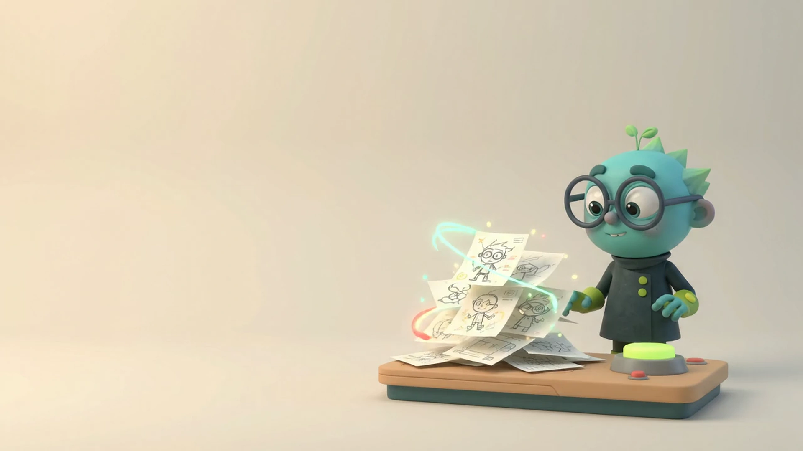

Websites
Memorable, responsive sites that help people understand your business and know what to do next.
CLEAR · RESPONSIVE · MEMORABLE
I design and develop websites, web apps, games, and custom software that are clear to use and carefully made.
From a first idea to a finished product, I bring design and development together to make useful digital experiences.
Memorable, responsive sites that help people understand your business and know what to do next.
CLEAR · RESPONSIVE · MEMORABLEUseful tools with friendly flows, clear screens, and interactions people can figure out quickly.
INTUITIVE · USEFUL · FOCUSEDPlayful worlds, satisfying feedback, and small surprises that make people want another turn.
ENGAGING · RESPONSIVE · ORIGINALPlay my games ↗Purposeful software that makes everyday tasks feel a little lighter and a lot clearer.
PRACTICAL · PURPOSEFUL · CLEARExplore the work by format. Every project below is placed in the area it belongs, with its current status made clear.
I'm preparing a selection of completed work for this space. Explore the design studies or tell me what you need to build.
These illustrative studies explore how websites, apps, games, and software can look and feel. They are concepts, not commissioned projects.
A bright, welcoming web concept for a brand with something good to share.
A cheerful productivity app concept that makes progress feel rewarding.
A lively little game world with bold colors and a grin around every corner.
A friendly dashboard concept for making complicated work feel simple.
These are design concepts, not client commissions or live products.
Serious about the work.
Here for the joy of making it.
A clear, collaborative path from understanding the need to building and refining the solution.
We define the audience, the problem, and what a successful outcome looks like.
I map the structure and experience, then shape a visual direction that fits.
The design becomes a working product, tested across devices and refined.
We prepare for release and use feedback to guide the next improvements.
Sitelume Studio is an independent creative development practice based in Sri Lanka. I design and build websites, web apps, games, and software for ideas that need to work as well as they look.
My approach is simple: understand the need, make thoughtful decisions, and pay attention to the details people actually use.
Get in touch ↗Some quick answers before we start making things.
Websites, web apps, games, and other software. Tell me what you have in mind, and we can talk through the right approach.
Yes. I can discuss redesigns, interface improvements, responsive fixes, and useful updates to an existing product.
Responsive layouts are part of the design process. The experience should make sense on small screens as well as large ones.
A short description of the idea, who it's for, what you want it to do, and any examples or timeline you have in mind.
Tell me what you're building and what you need it to do. I'll reply by email to discuss the next step.
sadunildisanayaka@gmail.com ↗BASED IN SRI LANKA · AVAILABLE REMOTELY